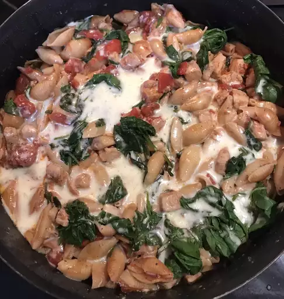

Italian Chicken Skillet

This Italian chicken skillet recipe is a delicious and easy dinner!
The best part is that it cooks all in one skillet so there is hardly any mess!
Ingredients
- 1 tablespoon olive oil
- 4 skinless, boneless chicken breast halves, cubed
- 2 cloves garlic, chopped, or to taste
- ½ cup red cooking wine
- ½ cup red cooking wine
- 8 ounces small seashell pasta
- 5 ounces fresh spinach, chopped
- 1 cup shredded mozzarella cheese
Steps
- Heat olive oil in a large skillet with a lid over medium heat; cook and stir the chicken and garlic until the chicken is no longer pink in the center, 5 to 8 minutes.
- Pour wine and diced tomatoes with their juice into the skillet, and bring to a boil over high heat while scraping any browned bits of food off of the bottom of the pan with a wooden spoon.
- Stir in shell pasta and return to a boil. Cook uncovered, stirring occasionally, until shells have cooked through, but are still firm to the bite, about 10 minutes. Spread spinach over the top of pasta, cover, and simmer until spinach leaves are cooked, about 5 minutes. Sprinkle mozzarella cheese evenly over the skillet; simmer until the cheese has melted and the pasta is bubbling, about 5 minutes.